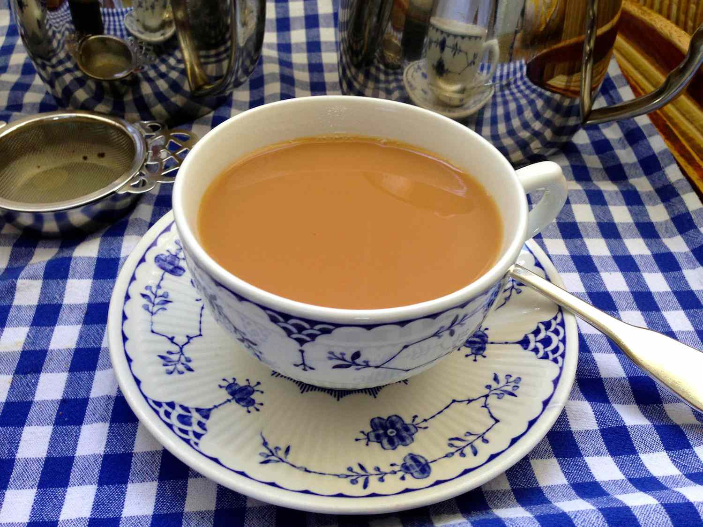
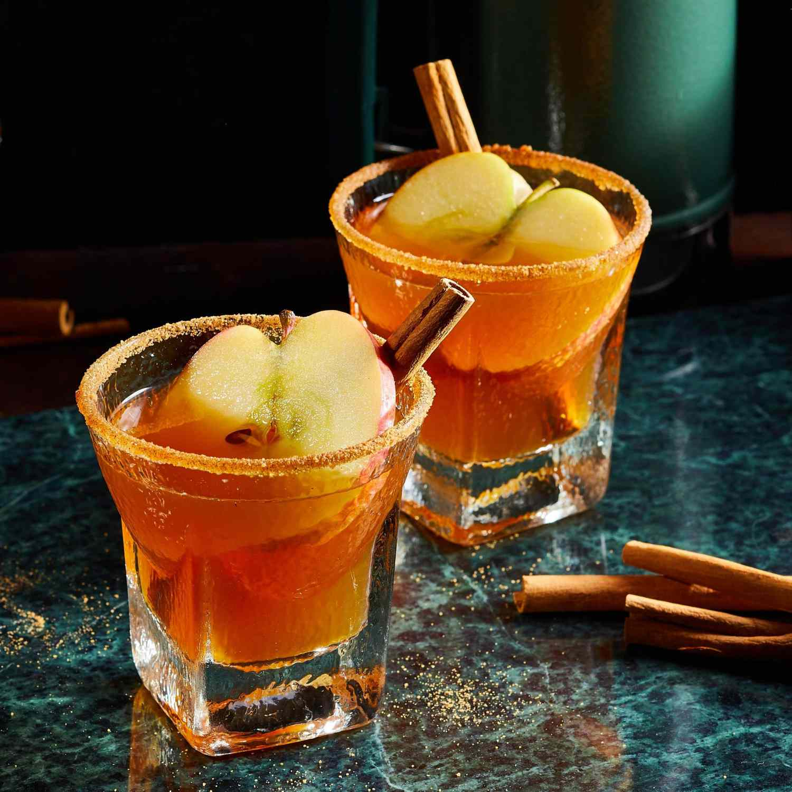

Learn how to make a cup fit for a queen.
By Karla Walsh Published on August 12, 2020
Sure, it seems simple: Add water. Steep. Sip. But the little details can make a big difference as you master how to make tea. That's because with such few ingredients, how you select them and treat them can determine whether your cup is fit for a queen — or something that you'll struggle to finish.First, we'll cover the basics of tea, then we'll explain how to make tea every which way. Your tea parties are just a few tips away from a big level-up.
Tea leaves come in five styles, which are broken down by how the leaves are dried, rolled, and made ready to drink:
Nearly all (90 percent) of the tea we drink is a blend, many of which include flowers, berries, spices, or other flavors to achieve their final taste. All of the above tea varieties can be made via the methods explained below, just using different brew times. Unless specified otherwise on your tea package, here's how to long to brew tea:
As you study up on all of the options for how to make tea, keep in mind that fresh, clean water will yield the tastiest mug (spring or filtered works great), and the temperature and steep time are important to ensure your tea isn't too bitter, too weak, too strong, or too sweet.
We'll start with the easiest option for how to make tea: Using a tea bag.
If you choose to steep loose-leaf tea, you'll need a tea infuser. These may come inside your teapot (like with this AUBCC 32-Ounce Glass Teapot with Stainless Steel Infuser; $16, amazon.com), or you can buy a single-serving tea infuser (such as these Stainless Steel Tea Infusers; $14 for two, amazon.com) to pop inside a single cup.
RELATED:Our Best Hot Tea Recipes (Including Chai!)
Most often made with black tea, iced tea also tastes great with green tea, white tea, or herbal tea as the base. Here's how to make iced tea in a big batch and a single serving.
To make iced sweet tea,add 2 tablespoons of sugar per cup. For a big-batch option, try this fan-favorite Smooth Sweet Tea recipe.
If you want an even smoother-tasting cup of tea or aren't near a stove or microwave to boil water, consider cold brew tea. Here's how to make tea cold brew-style:
RELATED: coffee drink recipe ideas
This tasty cocktail will warm your soul-no matter how chilly it is outside or how you take it. Just steep, stir, and pour it into your favorite thermos for cozy sips to go with any fall adventure. Don't like it hot? It can be served chilled, too. Rim glasses with cinnamon sugar and garnish with apple slices and cinnamon sticks.
| Prep Time: | Cook Time: | Additional Time: |
| 5 mins | 5 mins | 5 mins |
| Total Time: | Servings: | Yield: |
| 15 mins | 6 | 6 servings |
| Name | Roll | Class | Age | City |
| Sayma | 3896 | 1st | 20 | Sylhet |
| Toiba | 9802 | 1st | 20 | Sylhet |
| Tanjina | 1285 | 1st | 20 | Sylhet |
| Lamiya | 2389 | 1st | 20 | Sylhet |
Bring cider and maple syrup just to a boil in a saucepan. Remove from heat. Add tea bags, ginger, and cardamom. Let stand, covered, for 5 minutes. Remove and discard tea bags and spices. Stir in bourbon and lemon juice.Bring cider and maple syrup just to a boil in a saucepan. Remove from heat. Add tea bags, ginger, and cardamom. Let stand, covered, for 5 minutes. Remove and discard tea bags and spices. Stir in bourbon and lemon juice.
Transfer to a warmed 32- to 40-ounce thermos.Transfer to a warmed 32- to 40-ounce thermos.
You can use pear cider instead of apple.
For a chilled cocktail, after removing tea bags and spices, put saucepan in a bowl of ice water and stir occasionally until chilled. Add bourbon and lemon juice; transfer to a chilled thermos.
The right temp! Warm a thermos by filling it with boiling water. Drain when ready to add the cocktail. For cold drinks, do the same, but fill with ice instead of hot water.The right temp! Warm a thermos by filling it with boiling water. Drain when ready to add the cocktail. For cold drinks, do the same, but fill with ice instead of hot water.The right temp! Warm a thermos by filling it with boiling water. Drain when ready to add the cocktail. For cold drinks, do the same, but fill with ice instead of hot water.The right temp! Warm a thermos by filling it with boiling water. Drain when ready to add the cocktail. For cold drinks, do the same, but fill with ice instead of hot water.
| Name | Roll | Sub 1 | Sub 2 | Total Marks |
| Sayma | 18 | 80 | 90 | 170 |
| Toiba | 19 | 85 | 95 | 180 |
| Lamiya | 20 | 78 | 88 | 166 |
| Player name | Runs | Balls | 4s | 6s |
| Tamim Iqbal | 82 | 56 | 9 | 2 |
| Liton Das | 120 | 95 | 12 | 5 |
Captain: Najmul Hossain Shanto (Test, ODI, T20I)
Coaches: Phil Simmons (head coach), Nic Pothas (assistant coach), David Hemp (batting coach), Andre Adams (fast bowling coach)
First international match: 1986
Cricket board: Bangladesh Cricket Board (BCB)
Cricket was played in unified Bengal in the 18th and 19th centuries, but the eastern parts, modern-day Bangladesh, began to stage proper tournaments only in the 1950s, when the region was known as East Pakistan.
An MCC side first toured Bangladesh in 1976-77. The cricket board of the time, the BCCB, put together a team for the 1979 ICC Trophy, a qualifier for the World Cup then. Seven years on, Bangladesh played their first ODI. Their first appearance at cricket's biggest event was in 1999, alongside Scotland and Kenya, the teams they beat in the semi-final and final of the ICC Trophy in Malaysia two years before. The country's prime minister, Sheikh Hasina, led the rousing reception back home, with millions in attendance.
Bangladesh's case for full membership of the ICC had been strengthened by their successful hosting of the 1998 ICC KnockOut Trophy, and in the 1999 World Cup they beat favourites Pakistan in one of the biggest upsets in the tournament's history. The following season, a first-class competition was established in the country, and in June 2000, Bangladesh became the tenth Test-playing nation.
They only won their first Test after playing 34 matches. Months after that win, against Zimbabwe, they were humiliated in their first Test at Lord's, though they made up somewhat by beating Australia in an ODI in Cardiff later on the tour.They only won their first Test after playing 34 matches. Months after that win, against Zimbabwe, they were humiliated in their first Test at Lord's, though they made up somewhat by beating Australia in an ODI in Cardiff later on the tour.